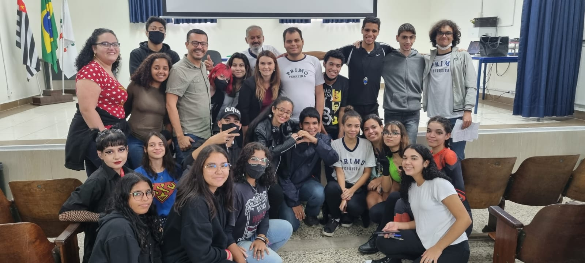
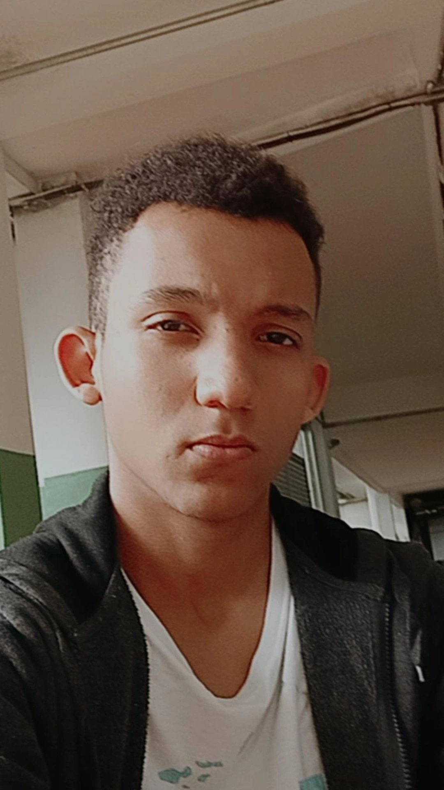
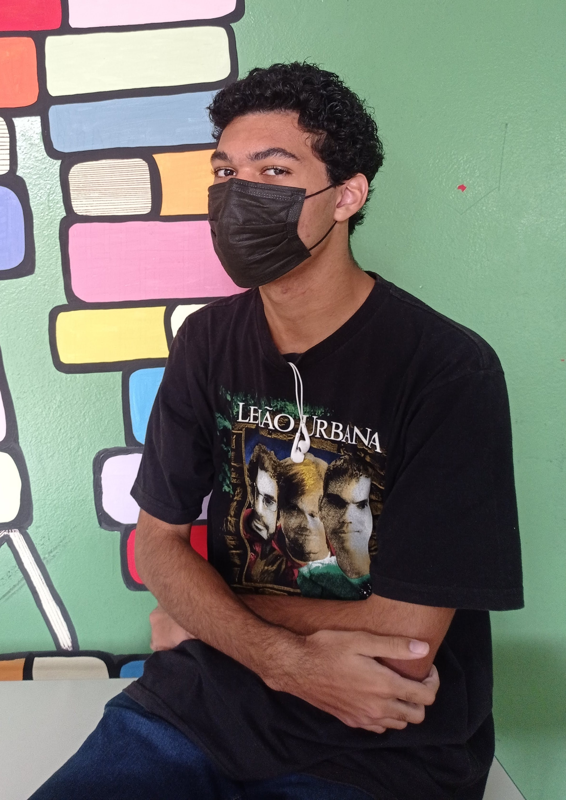
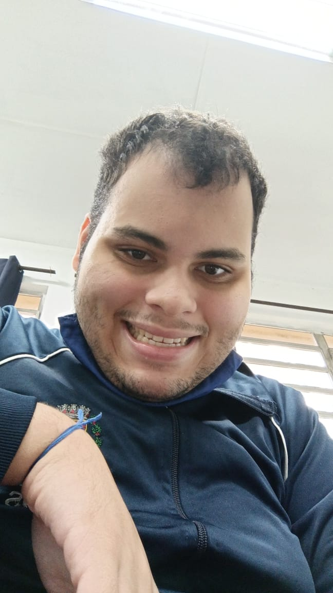
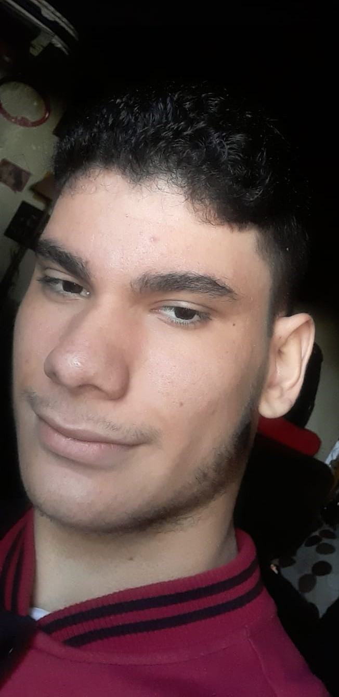
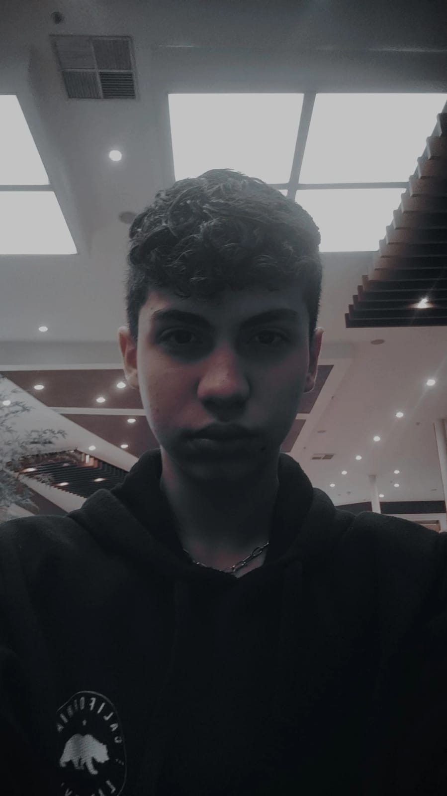
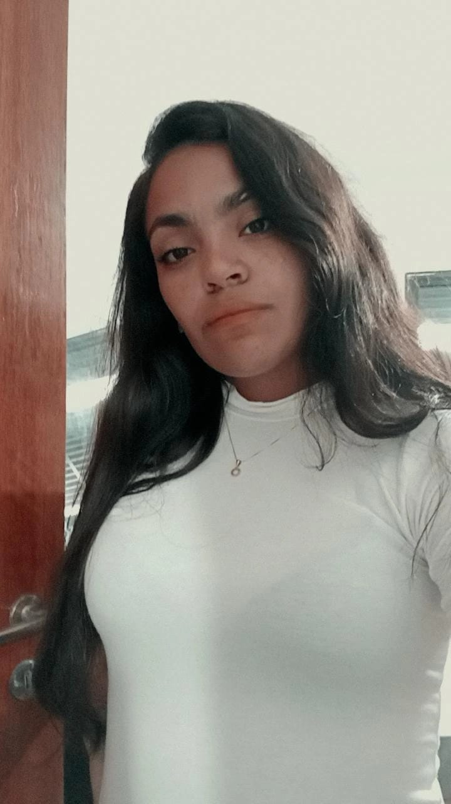

Sobre Nós
Jornal PF

Com mais de 54 anos, contribuindo para a educação, a E.E. Professor Primo Ferreira publica a 1ª. Edição do Jornal PF. Trata-se de um espaço democrático, de respeito às ideias e com assuntos que interessam, principalmente aos estudantes, professores e todos que integram a comunidade Primo Ferreira.
Este trabalho é feito em equipe. Mais de dez alunos estão descobrindo como é importante ser um leitor crítico e também produtor de conteúdo. A informação será sempre a matéria-prima do Jornal PF: Ela será conferida e de qualidade, aqui não há espaço para Fake News e ataques pessoais.
A informação é um instrumento valioso no século 21. Esperamos que leiam, gostem e desde já convidamos a todos, que façam parte de nossa equipe. A equipe de redação do Jornal PF agradece. Boa leitura!

Conheça a nossa equipe

Kauê M.Freitas
-
Sala - 3°C - Manhã
-
Desenvolvedor web do jornal
-
Estudante da área front-end que pretende estar fazendo faculdade na Unisanta em 2023

Marina Croce
-
Sala - 3°D - Manhã
-
Fotógrafa e jornalista
-
Desenhista, curiosa por fotografia e edição de vídeos e imagens. Tem o interesse nas áreas de Jornalismo e Direito, e possuo interesse em artes marciais.
-
Procura fazer o seu melhor na parte de pesquisas, e dar a melhor atenção possível aos entrevistados

Marcelo Castanheira
-
Sala - 3°H - Manhã
-
Gestor do Banco de Dados do Jornal PF.
-
Atualmente esta cursando o SESI e pretende cursar Arquitetura.

Nickolas Silva Moraes
-
Sala - 3°A - Manhã
-
Desenvolvedor de artigos jornalísticos
-
Aspirante a escritor, que pretende fazer faculdade de Filosofia e tem um grande interesse em História. Pretende continuar se expressando através de seus textos no futuro.

Gabriel Valério
-
Sala - 3°E - Manhã
-
Desenvolvedor de artigos jornalisticos
-
É fã de animes e seríes da netflix e assina a matería do Dragon Ball Z.

Dangelo Antony
-
Sala - 2°E - Manhã
-
Desenvolvedor de artigos jornalísticos
-
Aspirante a Desenvolvedor de jogos e TI e pretende trabalhar na área de Informática.

Beatriz Boaventura Luiz
-
Sala - 3°I - Manhã
-
Desenvolvedora de artigos jornalísticos
-
Atualmente trabalha cuidando de uma criança especial. é doida por Direito, mas por causa do seu trabalho acabou se apaixonando por Fisioterapia

Rhian Arthur Nogueirol Paulo
-
Sala - 2°F - Manhã
-
Entrevistador
-
Estuda inglês e marketing digital. Gosta muito da área de investimentos e se caso não der certo pretende continuar investindo mais na área de marketing digital, buscando aprender coisas novas e desenvolver suas habilidades.

Yolanda Santos de Oliveira
-
Sala - 3°I - Manhã
-
Desenvolvedora de artigos jornalísticos
-
Atualmente trabalha na praia em um carrinho de bebida. Está na dúvida entre Jornalismo, Direito e Editoração. Está sempre querendo aprender, e entender coisas novas e se arrisca em novas situações.

Marvelly Helrig Dos Santos Dias
-
Sala - 3°A - Manhã
-
Editoria de assuntos internacionais
-
Estou em processo de seleção militar, porém pretendo concursar para engajar na Escola Naval e posteriormente no ITA
Kauê M.Freitas
- Sala - 3°C - Manhã
- Desenvolvedor web do jornal
- Estudante da área front-end que pretende estar fazendo faculdade na Unisanta em 2023
Marina Croce
- Sala - 3°D - Manhã
- Fotógrafa e jornalista
- Desenhista, curiosa por fotografia e edição de vídeos e imagens. Tem o interesse nas áreas de Jornalismo e Direito, e possuo interesse em artes marciais.
- Procura fazer o seu melhor na parte de pesquisas, e dar a melhor atenção possível aos entrevistados
Marcelo Castanheira
- Sala - 3°H - Manhã
- Gestor do Banco de Dados do Jornal PF.
- Atualmente esta cursando o SESI e pretende cursar Arquitetura.
Nickolas Silva Moraes
- Sala - 3°A - Manhã
- Desenvolvedor de artigos jornalísticos
- Aspirante a escritor, que pretende fazer faculdade de Filosofia e tem um grande interesse em História. Pretende continuar se expressando através de seus textos no futuro.
Gabriel Valério
- Sala - 3°E - Manhã
- Desenvolvedor de artigos jornalisticos
- É fã de animes e seríes da netflix e assina a matería do Dragon Ball Z.
Dangelo Antony
- Sala - 2°E - Manhã
- Desenvolvedor de artigos jornalísticos
- Aspirante a Desenvolvedor de jogos e TI e pretende trabalhar na área de Informática.
Beatriz Boaventura Luiz
- Sala - 3°I - Manhã
- Desenvolvedora de artigos jornalísticos
- Atualmente trabalha cuidando de uma criança especial. é doida por Direito, mas por causa do seu trabalho acabou se apaixonando por Fisioterapia
Rhian Arthur Nogueirol Paulo
- Sala - 2°F - Manhã
- Entrevistador
- Estuda inglês e marketing digital. Gosta muito da área de investimentos e se caso não der certo pretende continuar investindo mais na área de marketing digital, buscando aprender coisas novas e desenvolver suas habilidades.
Yolanda Santos de Oliveira
- Sala - 3°I - Manhã
- Desenvolvedora de artigos jornalísticos
- Atualmente trabalha na praia em um carrinho de bebida. Está na dúvida entre Jornalismo, Direito e Editoração. Está sempre querendo aprender, e entender coisas novas e se arrisca em novas situações.
Marvelly Helrig Dos Santos Dias
- Sala - 3°A - Manhã
- Editoria de assuntos internacionais
- Estou em processo de seleção militar, porém pretendo concursar para engajar na Escola Naval e posteriormente no ITA